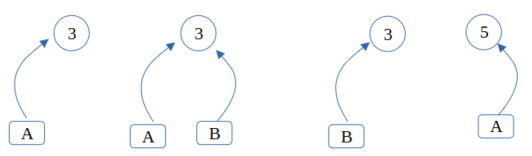
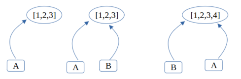
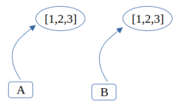
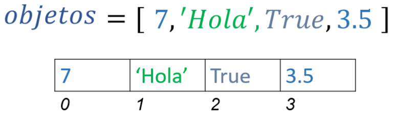
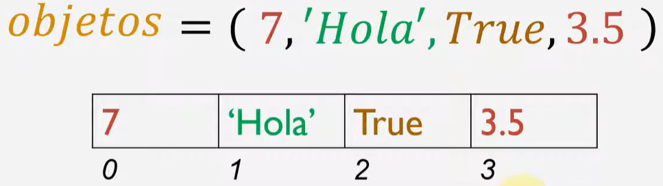
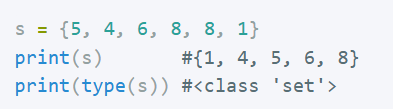
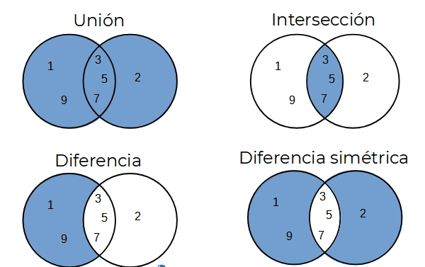
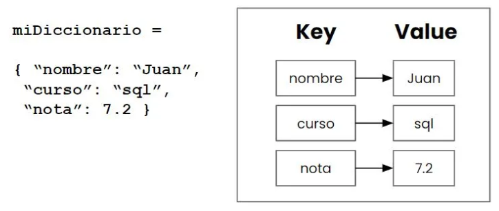
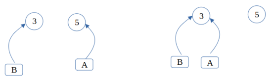

Estructures avançades en Python
En Python, les dades es divideixen en mutables i immutables, depenent de si el seu contingut pot canviar després de la seua creació.
Els objectes immutables no poden canviar el seu contingut després de ser creats. Qualsevol “modificació” realment crea un nou objecte en memòria.
En Python, els tipus de dades immutables:
- Nombres (int, float, complex)
- Cadenes de text (str)
- Tuples (tuple)
- Conjunts immutables (frozenset)
- Booleans (bool)
Els objectes mutables poden canviar el seu contingut sense canviar la seua identitat en memòria.
En Python, els tipus de dades mutables:
- Llistes (list)
- Diccionaris (dict)
- Conjunts (set)
- Objectes definits per l'usuari (classes)
Objectes immutables (int, str, bool...)
a = 3 # Es crea el literal 3 en memòria i s'assigna el seu “identificador” a la variable a
b = 3 # Com que el literal 3 ja existeix, se li assigna el seu “identificador” a la variable b
a = 5 # Es crea el literal 5 en memòria i s'assigna el seu “identificador” a la variable a
Per “identificador” es fa referència a un identificador d'objecte (no a una adreça de memòria). Aquest identificador es pot obtindre amb la funció id(var).
Prova:
>>> a = 9
>>> b = 10
>>> id(a)
11754152
>>> id(b)
11754184
>>> b = a
>>> id(b)
11754152
En Python es produeix aliasing, és a dir, els objectes tenen individualitat, i múltiples noms poden referir-se al mateix objecte.
Objectes mutables (llistes, diccionaris, conjunts, definits per l'usuari...)
En Python, les variables són referències a objectes en memòria, no contenidors de dades directament. Quan fas una assignació com:
a = [1, 2, 3] # a és una llista, per tant mutable
b = a
Tant a com b apunten al mateix objecte (una llista en aquest cas). No es crea una còpia de la llista; simplement, ambdues variables fan referència al mateix objecte. Si modifiques la llista a través de b:
b.append(4) # això afegeix un element al final de la llista
La llista a la qual a apunta també es veu modificada, ja que a i b fan referència al mateix objecte en memòria.
Referències i aliasing
La diferència amb els objectes immutables és que quan modifiquem un objecte mutable, no es crea un de nou (si no existeix), com passa amb els immutables. Es modifica l’objecte i es mantenen les referències.
Una altra diferència amb els immutables és que quan assignem una llista a una variable, ES CREA una nova llista (encara que ja n’existisca una amb els mateixos elements).
a = [1, 2, 3]
b = [1, 2, 3]
Això no pot passar amb els objectes immutables. En el cas de dos objectes immutables iguals, s’apunta al mateix.
Objectes mutables (llistes, diccionaris, conjunts, definits per l'usuari...)
En Python, les variables són referències a objectes en memòria, no contenidors de dades directament. Quan fas una assignació com:
a = [1, 2, 3] # a és una llista, per tant mutable
b = a
Tant a com b apunten al mateix objecte (una llista en aquest cas). No es crea una còpia de la llista; simplement, ambdues variables fan referència al mateix objecte. Si modifiques la llista a través de b:
b.append(4) # això afegeix un element al final de la llista
La llista a la qual a apunta també es veu modificada, ja que a i b fan referència al mateix objecte en memòria.
Referències i aliasing
La diferència amb els objectes immutables és que quan modifiquem un objecte mutable, no es crea un de nou (si no existeix), com passa amb els immutables. Es modifica l’objecte i es mantenen les referències.
Una altra diferència amb els immutables és que quan assignem una llista a una variable, ES CREA una nova llista (encara que ja n’existisca una amb els mateixos elements).
a = [1, 2, 3]
b = [1, 2, 3]
Això no pot passar amb els objectes immutables. En el cas de dos objectes immutables iguals, s’apunta al mateix.
Llistes []
Les llistes són estructures de dades que poden emmagatzemar diversos elements.
- Són ordenades. Suporten indexació i slicing.
- Són Mutables: Es poden modificar després de ser creades.
- Es poden afegir o eliminar elements amb mètodes com
append(),remove(),pop(), etc. - Els elements poden ser mutables o immutables.
- Es poden niar.
Vegem com manipular llistes amb exemples..
fruites = ["poma", "plàtan", "cirera"]
llista = list("1234")
llista = [1, "Hola", 3.67, [1, 2, 3]]
print(fruites[0])
fruites[0] = "pera"
del fruites[1]
fruites.append("taronja")
print(fruites) print(*fruites) print(*fruites, sep=' -> ')
len(fruites)
max(fruites) min(fruites)
sum(mevallista)
mevallista = []
mevallista[0] = 24 mevallista[1] = 46
mevallista[-1] = 33 mevallista[-2] = 57
nouafruita = fruites[2:4]
nouafruita2 = fruites[:4] nouafruita3 = fruites[2:]
llista2 = [1, 4, 7, "plàtan"]
mevallista.insert(1, 15)
mevallista.extend([7, 8, 9])
mevallista.remove(15)
mevallista.clear()
ultim = mevallista.pop()
altre = mevallista.pop(2)
print(10 in mevallista)
index = mevallista.index("plàtan")
mevallista.sort()
llista_ordenada = sorted(mevallista)
mevallista.reverse()
print(mevallista.count("pera"))
copia_llista = mevallista.copy()
copia_llista = mevallista[:]
llista_niada = [[1, 2, 3], [4, 5, 6], [7, 8, 9]]
llista3 = llista1 + llista2
llista_repetida = llista1 * 3
x, y, z = llista
llista_sense_duplicats = list(set(mevallista))
resultat = all(x % 2 == 0 for x in mevallista)
resultat = any(x % 2 == 0 for x in mevallista)
for e in llista: print(e)
for index, l in enumerate(llista): print(index, l)
type(llista1) is list
isinstance(llista1, list)
Python List comprehension o Comprensió de llistes en Python
La comprensió de llistes en Python és una manera concisa i eficient de crear llistes a partir d'iterables com llistes, tuples, rangs, etc.
Sintaxi bàsica:
nova_llista = [expressio for element in iterable if condició]
• expressio: operació o transformació aplicada a cada element
• element: variable que pren els valors de l'iterable
• iterable: objecte iterable (llista, tupla, rang, etc.)
• if condició (opcional): filtra els elements
Exemples de comprensió de llistes
-
Crear una llista de quadrats:
quadrats = [x**2 for x in range(10)] print(quadrats) # Resultat: [0, 1, 4, 9, 16, 25, 36, 49, 64, 81]
-
Filtrar nombres parells:
parells = [x for x in range(10) if x % 2 == 0] print(parells) # Resultat: [0, 2, 4, 6, 8]
-
Convertir paraules a majúscules:
paraules = ["hola", "món", "python"] majuscules = [paraula.upper() for paraula in paraules] print(majuscules) # Resultat: ['HOLA', 'MÓN', 'PYTHON']
Tuples ()
Les tuples són com les llistes però, una vegada declarades, no es poden modificar (són immutables).
- Són ordenades. Suporten indexació i slicing.
- Són Immutables: No es poden modificar després de ser creades.
- No Es poden afegir o eliminar elements.
- Els elements poden ser mutables o immutables.(per exemple, una llista dins d’una tupla Sí que pot canviar).
- Es poden niar.(una tupla pot contenir altres tuples).
mesosAny = ("Gen", "Feb", "Mar", "Abr", "Mai", "Jun", "Jul", "Ago", "Set", "Oct", "Nov", "Des")
mesosAny[1] # accés al segon element
mesosAny[-1] # accés a l'últim element
mesosAny[:2] # slicing
mesosAny[0] = 8 # ERROR, no podem modificar
tupla1 = () # tupla buida
tupla2 = (6,) # tupla d'un sol element, cal posar la coma!
tupla1 + tupla2 # concatenar tuples
tupla2 * 3 # repetir la tupla 3 vegades
"Mai" in mesosAny # retorna True
len(tupla2) # nombre d'elements
max, min, sum # si els valors són compatibles
tupla1.count(23) # comptar ocurrències
tupla1.index(23) # posició d'un valor
tupla1.index(23, 3) # a partir de la posició 3
tupla = tuple(llista) # convertir una llista en tupla
sorted(tupla) # retorna una llista ordenada
nova_llista = list(tupla) # convertir una tupla en llista
tupla = (1, 2, 3)
a, b, c = tupla # desempaquetat
tupla = (1, 2, 3, 4, 5)
TUPLA2 = 1, 2, 3, 4 # altra forma de definir
a, *b, c = tupla # a=1, b=[2,3,4], c=5
v = 1 # NO és una tupla
x = (2) # NO és una tupla
y = (1,) # SÍ és una tupla
tupla = 1, 2, ('a', 'b'), 3 # tupla amb elements niats
for t in tupla: print(t) # recorregut de la tupla
type(tupla2) is tuple # comprova si és una tupla
Quan usar tuples en lloc de llistes?
- Quan les dades no han de canviar (exemple: coordenades, dies de la setmana).
- Quan es busca més eficiència (les tuples consumeixen menys memòria i són més ràpides).
- Quan es necessiten dades hashables (les tuples es poden usar com a claus en diccionaris, les llistes no).
Tuple Comprehension?
En Python no existeix la "tuple comprehension" com a tal.
Si usem parèntesis (()) per intentar fer una comprensió, Python ho interpreta com un generator expression:
tupla = (x**2 for x in range(5))
print(tupla)
# Resultat: <generator object at 0x...>
Açò no crea una tupla, sinó un objecte generador. Per convertir-lo en tupla:
tupla = tuple(x**2 for x in range(5))
print(tupla)
Avantatges d’un generador:
- Eficiència de memòria: no carrega tots els elements a memòria.
- Rendiment: útil per a grans volums de dades.
- Simplicitat: codi més net que una funció generadora.
Conjunts -sets- {}
Característiques principals
- Elements únics: Un conjunt no pot contindre duplicats.
- No ordenats: Els elements no tenen un ordre específic.
- Mutables: Es poden afegir o eliminar elements.
- Els elements han de ser immutables: podem afegir o llevar, però no modificar un element concret.
Exemples d’ús
conjunt_buit = set()
conjunt = {1, 2, 2, 3}
print(conjunt) # Eixida: {1, 2, 3}
conjunt = set([1, 2, 3, 3]) # convertir una llista en conjunt
conjunt.add(3) # afegir un element
conjunt.remove(2) # elimina 2, dona error si no existeix
conjunt.discard(4) # elimina 4, no dona error si no existeix
conjunt.pop() # elimina i retorna un element aleatori
conjunt.clear() # buida el conjunt
len(conjunt) # número d’elements
print(5 in conjunt) # pertinença: True si 5 està en el conjunt
type(conjunt) is set # comprova si és un conjunt
a = frozenset([1, 2, 3]) # conjunt immutable
conjunt = {1, 2.5, "hola", (1, 2), frozenset([3, 4])}
for element in conjunt:
print(element)
Operacions entre conjunts
print(a.issubset(b)) # a està contingut en b
print(a.issuperset(b)) # a conté tots els elements de b
print(a.isdisjoint(b)) # a i b no tenen cap element en comú
# Unió
print(s1 | s2)
print(s1.union(s2))

# Intersecció
print(s1 & s2)
print(s1.intersection(s2))
# Diferència
print(s1 - s2)
print(s1.difference(s2))
# Diferència simètrica
print(s1 ^ s2)
print(s1.symmetric_difference(s2))
Mètodes destructius (modifiquen el conjunt original):
conjunt.update(iterable)
conjunt.intersection_update(iterable)
conjunt.difference_update(iterable)
conjunt.symmetric_difference_update(iterable)
Set Comprehension
És una forma compacta de crear conjunts.
nou_conjunt = {expressio for element in iterable if condició}
# Exemple:
parells = {x for x in range(10) if x % 2 == 0}
Diccionaris { , }
Els diccionaris emmagatzemen parells clau-valor.
Característiques principals
- Mutables
- No permeten claus duplicades. Si s’afegeix una clau repetida, el seu valor serà sobreescrit.
- Les claus han de ser immutables. Poden ser
str,int,tuple, però nolistodict. - Mantenen l’ordre d’inserció (des de Python 3.7).
Exemples d’ús
dic = {} # Diccionari buit
persona = {"nom": "Carlos", "edat": 30, "ciutat": "Madrid"}
print(persona["nom"]) # Accedeix al valor d’una clau. Imprimeix 'Carlos'
dic["nova_clau"] = "nou_valor" # Afegir una nova clau
dic["clau1"] = "valor_actualitzat" # Modificar una clau existent
valor = dic["clau1"] # Accedir a un valor (error si no existeix)
valor = dic.get("clau1", "per defecte") # Evita errors si no existeix
del dic["clau1"] # Eliminar una clau
valor = dic.pop("clau2", None) # Elimina i retorna el valor, o None
dic.clear() # Buida el diccionari
if "clau1" in dic:
print("Clau trobada")
# Iteracions
for clau in dic:
print(clau)
for valor in dic.values():
print(valor)
for clau, valor in dic.items():
print(clau, valor)
tamany = len(dic) # Nombre d’elements
nou_dic = dic.copy() # Còpia superficial
dic.update({"clau3": "valor3", "clau4": "valor4"}) # Afegir/modificar diverses claus
claus = dic.keys() # objecte dict_keys
valors = dic.values() # objecte dict_values
items = dic.items() # objecte dict_items
type(dic) is dict # Comprova si és un diccionari
dic1 | dic2 # (Python 3.9+) Fundeix dos diccionaris. Prioritza dic2
dic1 |= dic2 # Fusiona i actualitza dic1
Claus i valors mutables
Les claus han de ser immutables, però els valors poden ser de qualsevol tipus, fins i tot llistes o altres diccionaris.
dic = {(1, 2): "punt", (3, 4): "altre punt"}
print(dic[(1, 2)]) # "punt"
Comprensió de Diccionaris (Dictionary Comprehension)
Permet construir diccionaris de manera compacta a partir d’un iterable:
numeros = [1, 2, 3, 4]
quadrats = {n: n**2 for n in numeros}
print(quadrats) # {1: 1, 2: 4, 3: 9, 4: 16}
Funcions lambda (funcions anònimes)
Una expressió lambda en Python permet crear funcions petites i anònimes (sense nom). Són útils per definir comportaments ràpids o temporals, especialment dins d’estructures com diccionaris, funcions d’ordre superior (map, filter, sorted, etc.) o comprensions.
Sintaxi
lambda arguments: expressió
Exemple bàsic:
f = lambda x: x * 2
print(f(4)) # Imprimeix 8
Exemple amb diccionari de funcions
operacions = {
"suma": lambda x, y: x + y,
"resta": lambda x, y: x - y
}
print(operacions["suma"](10, 5)) # Imprimeix 15
print(operacions["resta"](10, 5)) # Imprimeix 5
En este cas, operacions és un diccionari que guarda funcions lambda com a valors. Cada clau representa una operació aritmètica, i pots executar la funció cridant-la amb els arguments corresponents.
El Garbage Collector (GC) de Python
El Garbage Collector és el mecanisme encarregat d'administrar la memòria automàticament en Python. Elimina els objectes que ja no s’utilitzen, alliberant espai i evitant fugues de memòria.
Exemple conceptual

>>> b = 3
>>> a = 5
>>> a = b
Quan a = 5, l’objecte 5 té una referència. Però després a = b, a passa a referenciar 3. Com ningú apunta ja a 5, queda sense ús i el GC el pot eliminar.
Funcionament intern
- Conteig de referències: cada objecte té un comptador que indica quantes referències l’apunten. Si arriba a zero, es pot eliminar automàticament.
- Recol·lecció de brossa generacional: els objectes s’organitzen en generacions (0, 1 i 2). Els nous comencen en la generació 0, i si “sobreviuen” diverses neteges, passen a generacions superiors.
Python fa neteges més freqüents en la generació 0 que en les superiors, perquè és més probable que els objectes nous siguen de curta duració.
Control manual amb el mòdul gc
Encara que el GC funciona automàticament, es pot controlar manualment amb el mòdul gc:
import gc gc.collect() # Força una execució del garbage collector gc.get_stats() # Mostra estadístiques sobre el GC
Funcions Avançades en Python
Ús de *args i **kwargs
*args permet passar un nombre variable d’arguments posicionals a una funció. S’emmagatzemen com una tupla.
def sumar(*args):
return sum(args)
print(sumar(1, 2, 3, 4)) # Output: 10
**kwargs permet passar arguments amb clau i valor (com un diccionari) sense definir-los prèviament.
def mostrar_info(**kwargs):
for clau, valor in kwargs.items():
print(f"{clau}: {valor}")
mostrar_info(nom="Anna", edat=30, ciutat="València")
Diferència:
*args: tupla d’arguments posicionals.**kwargs: diccionari d’arguments amb nom.
Exemple combinat:
def exemple(*args, **kwargs):
print("Args:", args)
print("Kwargs:", kwargs)
exemple(1, 2, 3, nom="Joan", edat=25)
Funcions Lambda
Les funcions lambda són funcions anònimes d’una sola línia, útils per a operacions curtes.
suma = lambda x, y: x + y print(suma(3, 5)) # 8 cuadrat = lambda x: x ** 2 print(cuadrat(4)) # 16 es_par = lambda x: x % 2 == 0 print(es_par(10)) # True
Exemples amb funcions d’ordre superior
# map numeros = [1, 2, 3, 4] dobles = list(map(lambda x: x * 2, numeros)) # filter pares = list(filter(lambda x: x % 2 == 0, numeros)) # sorted amb clau paraules = ["poma", "plàtan", "kiwi"] ordenades = sorted(paraules, key=lambda x: len(x))
Decoradors en Python
Un decorador és una funció que rep una altra funció, l’amplia amb funcionalitat addicional, i retorna una nova funció.
def mi_decorador(func):
def nova_funcio():
print("Abans de cridar la funció")
func()
print("Després de cridar la funció")
return nova_funcio
@mi_decorador
def salutacio():
print("Hola, món!")
salutacio()
Decoradors amb paràmetres
def decorador_amb_args(func):
def embolcall(*args, **kwargs):
print(f"Cridant {func.__name__} amb {args} {kwargs}")
return func(*args, **kwargs)
return embolcall
@decorador_amb_args
def suma(a, b):
return a + b
Decorador amb paràmetres personalitzats
def repetidor(n):
def decorador(func):
def embolcall(*args, **kwargs):
for _ in range(n):
func(*args, **kwargs)
return embolcall
return decorador
@repetidor(3)
def hola():
print("Hola!")
hola()
Decoradors predefinits
@staticmethod: mètode estàtic d’una classe.@classmethod: accedeix a la classe com a primer argument.@property: converteix un mètode en propietat.
class Persona:
def __init__(self, nom):
self._nom = nom
@property
def nom(self):
return self._nom
p = Persona("Carles")
print(p.nom) # Sense parèntesis
Generadors
Els generadors són una manera més senzilla i eficient de crear iterables en Python. S'utilitzen funcions amb la paraula clau yield en lloc de return.
Quan una funció conté yield, es converteix en un generador i pot conservar l'estat entre iteracions.
Exemple de generador:
def comptador(inici, fi):
while inici <= fi:
yield inici
inici += 1
for numero in comptador(1, 5):
print(numero)
Este codi té el mateix comportament que la classe Comptador de l'exemple anterior, però és molt més curt i fàcil de llegir.
Avantatges dels generadors:
- Menys codi i més llegibilitat.
- No cal gestionar
__iter__ni__next__. - Estalvi de memòria, ja que els valors es generen sobre la marxa (lazy evaluation).
Treballar amb Arrays en Python
Què és un array: També se sol dir vector i és un tipus de dades estructurades, relacionat i homogèni,
es a dir, totes les dades del vector seran del mateix tipus
Si els elemnts d'un vector, son vectors, estem parlant d'un vector bidimensional, o matriu
De igual manera es pot definir un cub, com a un vector de 3 dimensions, o un tesseracte o hipercub com un vector de 4 dimensions
En Python, es poden gestionar arrays mitjançant llistes o utilitzant el mòdul NumPy. Aquesta és una biblioteca externa que proporciona funcionalitats específiques per a computació numèrica.
Què és NumPy?
NumPy (Numerical Python) és una de les biblioteques més fonamentals i populars de Python per treballar amb computació científica i manipulació de dades numèriques.
És àmpliament utilitzada en àrees com:
- Anàlisi de dades
- Intel·ligència artificial
- Aprenentatge automàtic (machine learning)
- Processament d’imatges
- I molt més
NumPy proporciona:
- Arrays multidimensionals per treballar amb dades de manera més eficient que amb llistes de Python.
- Funcions matemàtiques optimitzades per fer operacions ràpides i vectoritzades.
- Eines per manipulació de dades, àlgebra lineal, transformades de Fourier, generació de nombres aleatoris, etc.
Instal·lació
Si no tens instal·lat NumPy, pots fer-ho amb la següent comanda:
$ pip3 install numpyCaracterístiques principals de NumPy
Arrays
El tipus de dades principal de NumPy és l'ndarray (array N-dimensional). Aquests són més ràpids i ocupen menys memòria que les llistes de Python.
Exemple bàsic:
import numpy as np
# Crear un array unidimensional
arreglo = np.array([1, 2, 3, 4])
print("Array:", arreglo)
# Crear un array bidimensional (matriu)
matriu = np.array([[1, 2, 3], [4, 5, 6]])
print("Matriu:\n", matriu)Explicació dels exemples:
np.array([...]): crea un array de NumPy a partir d'una llista de Python.- Els arrays poden ser d'una sola dimensió (com una llista) o multidimensionals (com una matriu o tensor).
- Les operacions amb arrays són molt més eficients que amb llistes, especialment en càlculs matemàtics o estadístics.
Vectorització amb NumPy
NumPy permet realitzar operacions matemàtiques sobre tots els elements d’un array d’una sola vegada, sense necessitat d’utilitzar bucles (loops).
Exemple:
# Operacions matemàtiques amb arrays
a = np.array([1, 2, 3])
b = np.array([4, 5, 6])
print("Suma:", a + b) # [5 7 9]
print("Producte escalar:", a * 2) # [2 4 6]Estalvi de memòria
NumPy emmagatzema les dades en un tipus homogeni (tots els elements són del mateix tipus), la qual cosa fa que siga més eficient en ús de memòria que les llistes tradicionals de Python.
Exemple:
import sys
llista = range(1000)
print("Mida de la llista:", sys.getsizeof(1) * len(llista))
arrel = np.arange(1000)
print("Mida de l'array NumPy:", arrel.nbytes)Funcions útils
NumPy inclou moltes funcions predefinides per a càlculs matemàtics:
- Aritmètiques:
np.sum,np.mean,np.median,np.std,np.var - Operacions lògiques:
np.all,np.any - Generació de nombres aleatoris:
np.random.rand,np.random.randint - Àlgebra lineal:
np.dot,np.linalg.inv,np.linalg.eig
Exemple de càlculs estadístics:
# Estadístiques bàsiques
dades = np.array([10, 20, 30, 40])
print("Mitjana:", np.mean(dades))
print("Desviació estàndard:", np.std(dades))Creació d'arrays especialitzats
NumPy facilita la creació d'arrays amb valors específics de forma ràpida i senzilla.
Exemples:
# Array de zeros
zeros = np.zeros((2, 3)) # 2 files, 3 columnes
print("Zeros:\n", zeros)
# Array d'unos
unos = np.ones((3, 2))
print("Unos:\n", unos)
# Array amb valors en un rang
rang = np.arange(0, 10, 2) # Inici, fi, pas
print("Rang:", rang)
# Array amb valors espaiats uniformement
espaiats = np.linspace(0, 1, 5) # Inici, fi, quantitat
print("Espaiats uniformement:", espaiats)Nota: Aquestes funcions són molt útils per preparar dades per a experiments, simulacions o per crear estructures numèriques base de manera ràpida.
Indexació i slicing avançats
Amb NumPy pots accedir i modificar elements dels arrays utilitzant índexs o fins i tot condicions.
arrel = np.array([10, 20, 30, 40, 50])
# Accés per índex
print("Element en l'índex 2:", arrel[2]) # 30
# Slicing (subarray)
print("Subarray:", arrel[1:4]) # [20 30 40]
# Condicionals
print("Elements majors que 25:", arrel[arrel > 25]) # [30 40 50]Operacions amb matrius
NumPy és molt eficient per a fer càlculs amb matrius, com el producte punt o la transposició.
A = np.array([[1, 2], [3, 4]])
B = np.array([[5, 6], [7, 8]])
# Producte punt (matriu A · matriu B)
print("Producte punt:\n", np.dot(A, B))
# Transposició de matriu A
print("Transposada de A:\n", A.T)Nota: El mètode np.dot calcula el producte matricial clàssic, mentre que A.T retorna la transposada (intercanviant files per columnes).
Generació de nombres aleatoris
NumPy ofereix diverses funcions per generar valors aleatoris de manera senzilla:
# Nombre aleatori entre 0 i 1
aleatori = np.random.rand()
print("Nombre aleatori:", aleatori)
# Matriu aleatòria d'enters
aleatoris = np.random.randint(1, 10, size=(3, 3))
print("Matriu aleatòria:\n", aleatoris)Aquestes funcions són útils per simular dades, inicialitzar variables o fer proves estadístiques.
Per què utilitzar NumPy?
NumPy és una biblioteca fonamental en Python per al càlcul numèric i l'anàlisi de dades. Els principals motius per a utilitzar-la són:
- Velocitat: NumPy pot ser fins a 50 vegades més ràpid que les llistes normals de Python per a operacions numèriques gràcies al seu codi optimitzat en C.
- Optimització de memòria: Els arrays de NumPy utilitzen menys memòria que les estructures estàndard de Python.
- Facilitat d’ús: Inclou moltes funcions matemàtiques, estadístiques i d’àlgebra lineal que es poden utilitzar directament.
- Interoperabilitat: Funciona perfectament amb altres biblioteques com Pandas, Matplotlib, Scikit-learn, entre altres.
Altres biblioteques en Python
Incloses en la biblioteca estàndard
- os: Per a interactuar amb el sistema operatiu (crear carpetes, llegir fitxers, etc.).
- sys: Per accedir a informació del sistema i dels arguments passats al programa.
- json: Per llegir i escriure dades en format JSON.
- datetime: Per gestionar dates i hores.
- math: Proporciona funcions matemàtiques avançades com arrels quadrades, trigonometria, etc.
- decimal: Per a càlculs de precisió elevada, útil en contextos financers.
- random: Per generar nombres aleatoris.
- re: Per treballar amb expressions regulars (regex).
- collections: Ofereix estructures de dades avançades com
Counter,deque,defaultdict, etc. - itertools: Funcions per manipular iteradors de forma eficient.
- sqlite3: Per gestionar bases de dades SQLite de forma directa en Python.
Pots veure tots els mòduls disponibles amb help() dins de l’intèrpret de Python, i després escriure modules.
Biblioteques externes populars
- NumPy: Per a càlculs numèrics ràpids i eficients.
- Pandas: Per al tractament de dades tabulars (com taules, fulls de càlcul, etc.).
- Matplotlib: Per crear gràfics i visualitzacions bàsiques.
- Seaborn: Basada en Matplotlib, permet crear gràfics estadístics atractius i senzills.
- Scikit-learn: Llibreria per a aprenentatge automàtic (machine learning).
- Flask i Django: Frameworks per a desenvolupament web amb Python.
- Requests: Per fer peticions HTTP com GET, POST, etc.
- BeautifulSoup: Per fer web scraping (extracció d’informació de pàgines web).
- TensorFlow i PyTorch: Llibreries potents per a intel·ligència artificial i deep learning.
- Typer: Per crear interfícies de línia de comandes (CLI) de forma ràpida i elegant.
- OpenCV: Per a processament d’imatges i visió artificial.
- Pillow: Per a manipulació d’imatges (redimensionar, retallar, etc.).
- ...i moltes més.
Nota: Les biblioteques externes s’instal·len normalment amb pip, per exemple: pip install numpy.
Dates en Python
Python inclou de manera nativa eines per al tractament de dates i hores mitjançant el mòdul estàndard datetime. Aquest mòdul ve integrat en Python i no necessites instal·lar cap llibreria addicional per utilitzar-lo.
Importar el mòdul datetime
from datetime import datetime, timedelta, dateObtenir la data i hora actuals
Data i hora actuals:
ahora = datetime.now()
print("Data i hora actual:", ahora)Només la data actual:
hoy = date.today()
print("Data actual:", hoy)Crear una data o hora específica
Crear una data específica:
mi_fecha = datetime(2025, 1, 28) # Any, mes, dia
print("Data específica:", mi_fecha)Crear una data i hora específica:
mi_fecha_hora = datetime(2025, 1, 28, 14, 30, 0) # Any, mes, dia, hora, minut, segon
print("Data i hora específica:", mi_fecha_hora)Format de dates (strftime)
Pots convertir una data o hora en un format específic com a text:
formato = ahora.strftime("%d/%m/%Y %H:%M:%S")
print("Format personalitzat:", formato)Exemples de codis de format:
%Y- Any complet (2025)%m- Mes en número (01)%d- Dia (28)%H- Hora en format de 24 hores%I- Hora en format de 12 hores%M- Minut%S- Segon%p- AM o PM
Convertir i Operar amb Dates en Python
Convertir text en data (strptime)
Pots convertir una cadena de text en un objecte datetime:
texto = "28/01/2025 14:30:00"
fecha_convertida = datetime.strptime(texto, "%d/%m/%Y %H:%M:%S")
print("Text convertit a data:", fecha_convertida)Operacions amb dates
Aquí tens algunes operacions que pots realitzar amb dates:
1. Afegir o restar temps amb timedelta:
Afegir 10 dies a la data actual:
nueva_fecha = ahora + timedelta(days=10)
print("Data amb 10 dies més:", nueva_fecha)Restar 5 hores:
nueva_hora = ahora - timedelta(hours=5)
print("Data amb 5 hores menys:", nueva_hora)2. Calcular la diferència entre dues dates:
fecha1 = datetime(2025, 1, 28)
fecha2 = datetime(2025, 2, 5)
diferencia = fecha2 - fecha1
print("Dies de diferència:", diferencia.days)Comparar dates
Pots utilitzar operadors de comparació com <, >, == per comparar objectes de data i hora:
if fecha1 < fecha2:
print("Fecha1 és anterior a Fecha2")
else:
print("Fecha1 és posterior o igual a Fecha2")Altres Mòduls Relacionats amb Dates en Python
Mòdul time
El mòdul time s'utilitza per treballar amb el temps del sistema i realitzar operacions com mesurar intervals o fer pauses.
Característiques principals:
- Gestió de timestamps (segons des de l'Epoch, 1 de gener de 1970).
- Realitzar pauses en l'execució del programa.
Exemple bàsic:
import time
# Pausar l'execució per 2 segons
time.sleep(2)
# Obtenir el timestamp actual
timestamp = time.time()
print("Timestamp actual:", timestamp)Mòdul calendar
Aquest mòdul és útil per treballar amb calendaris i verificar propietats de dates (com dies de la setmana, anys bessis, etc.).
Característiques principals:
- Generar calendaris en text o HTML.
- Verificar si un any és bisiest.
- Obtenir el primer dia de la setmana i el nombre de dies en un mes.
Exemple bàsic:
import calendar
# Verificar si un any és bisiest
print("¿2024 és bisiest?", calendar.isleap(2024))
# Obtenir el calendari de gener 2025
print(calendar.month(2025, 1))Mòdul zoneinfo (Python 3.9+)
Aquest mòdul permet gestionar zones horàries de manera més senzilla i eficient.
Característiques principals:
- Treballar amb zones horàries específiques.
- Convertir temps entre zones horàries.
Exemple bàsic:
from datetime import datetime
from zoneinfo import ZoneInfo
# Definir zones horàries
utc = datetime.now(ZoneInfo("UTC"))
madrid = datetime.now(ZoneInfo("Europe/Madrid"))
print("Hora UTC:", utc)
print("Hora Madrid:", madrid)Llibreries externes (opcionals)
Tot i que Python inclou eines robustes per gestionar dates, de vegades pots necessitar llibretes externes per a casos més complexos. Les més populars són:
- dateutil
- arrow